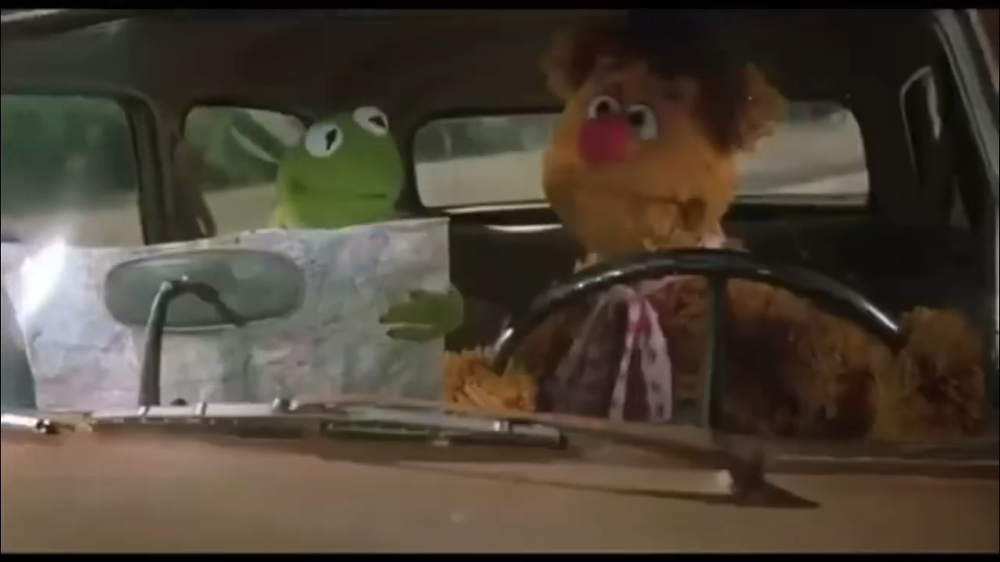

Accepting burnout
Finding a way through
Now my hands have let go, but my heart still reaches.
I make a map for my mind to follow
Then burn it in an offering to the gods

Finding a way through
Now my hands have let go, but my heart still reaches.
I make a map for my mind to follow
Then burn it in an offering to the gods
